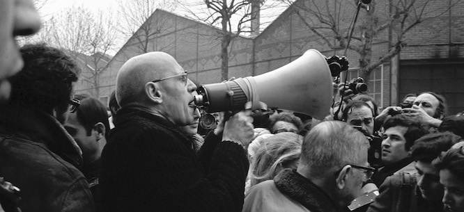

The True Foucault
The issues most important to Michel Foucault have moved from the margins to become major preoccupations of political life. But what did Foucault actually teach?

Suddenly, it seems, everyone has a lot to say about Michel Foucault. And much of it isn’t pretty.
After enjoying a decades-long run as an all-purpose reference point in the humanities and social
sciences, the French philosopher has come in for a reevaluation by both the right and the left.
The right, of course, has long blamed Foucault for licensing an array of left-wing pathologies. Some
conservatives have even made Foucault a catchall scapegoat for ills ranging from slacker nihilism to
woke totalitarianism. But a strange new respect is emerging for Foucault in some precincts on the
right. Conservatives have flirted with the notion that Foucault’s hostility to confessional politics
could make him a useful shield against “social justice warriors.” This presumption was strengthened
during the COVID-19 pandemic, when Foucault’s critique of “biopolitics”—his term for the political
significance assumed by public-health and medical issues in modern times—provided a handy weapon for
attacking liberal fealty to scientific expertise.
As Foucault’s standing has climbed on the right, it has fallen on the left. A decade ago, left
attention focused on whether Foucault’s discussions of neoliberalism in the 1970s suggested that his
philosophical commitments harmonized with the emergent free-market ideology: hostile to the state,
opposed to disciplinary power, and tolerant of behaviors previously deemed immoral. (In full
disclosure, I contributed to this debate.) Recently, the locus of the leftist critique has, like its
conservative counterpart, shifted to cultural politics. Thus the social theorists Mitchell Dean and
Daniel Zamora maintain that Foucault’s politicization of selfhood inspired the confessional antics
of “woke culture,” which seeks to overcome societal ills by making the reform of one’s self the
ultimate managerial project. At the same time, Foucault’s standing has suffered a debilitating blow
in the wake of recent claims that he paid underage boys for sex while living in Tunisia during the
1960s. These charges have brought new attention to places in his writing where—like some other
radicals of his era—he questioned the need for a legal age of consent.
What is going on here? Why does Foucault now feel like our contemporary, almost forty years after
his death? Why are leftists turning against him? And why are some conservatives adopting him?
First, the current debate over the political implications of Foucault’s thought is symptomatic of
our off-kilter politics, in which populists style themselves as countercultural radicals. Second,
our high-octane public discourse draws increasingly on ideas that used to be confined to the academy
or rarefied intellectual circles. This is certainly true of progressive conceits—white privilege,
gender theory, critical race theory—but it also bears out on the right, as seen in young
conservatives’ increasing familiarity with the canons of nationalist and even fascist thought. As
academic culture seeps into political debate, it is no surprise that a thinker of Foucault’s stature
would be thrown into the mix.
Third, and most important, the early twenty-first century has become Foucauldian. Consider the
topics that Foucault helped to pioneer as objects of philosophical reflection: mental illness,
public health, gender and transgender identities, normalization and abnormality, surveillance,
selfhood. Once confined to the margins of political thought, these issues have become major
preoccupations with important stakes in everyday life, in the Western world and beyond.
The problem is that it has become all too easy to conflate Foucauldian subject matter with
Foucault’s thought. In the very discussions that invoke him, the deeper wellsprings of his
philosophies are often overlooked. Consequently, Foucault seems at once ultra-contemporary and—to
use a term favored by his preferred philosopher, Friedrich Nietzsche—curiously “untimely” (that is,
unfashionable or inopportune).
Foucault’s reputation is coated with thick accretions of polemical interpretation and partisan
appropriation. A century ago, Marx’s theories found themselves in a similar situation, as their
interpretation became a point of contention in the burgeoning socialist movement. In the wake of the
Bolshevik Revolution, the Hungarian philosopher Georg Lukács felt compelled to ask: “What is
orthodox Marxism?” Strange as it might sound, a similar question is in order for Foucault. What is
orthodox Foucauldianism? What did Foucault actually teach?
Foucault was a protean thinker whose interests frequently changed in the course of his thirty-year
career. Although he held many opinions, we must not forget that he was, at his core, a
philosopher—not a historian (despite the historical character of his thinking) or an ideologue or a
political commentator.
Aristotle began his Metaphysics with an assertion: “All men by nature desire to know.” First and
foremost, Foucault sought to explore this claim—not as a self-evident truth but as an idea to be
rendered strange and surprising. Foucault’s inquiry is not the traditional problem of epistemology
(“What is knowledge?”) but a cultural question: “Why do we value knowledge?” In his essay “On Truth
and Lie in an Extra-Moral Sense,” Nietzsche wrote, “In some remote corner of the universe, poured
out and glittering in innumerable solar systems, there once was a star on which clever animals
invented knowledge. That was the highest and most mendacious minute of ‘world history’—yet only a
minute.” These words capture the spirit—if not the tone—of Foucault’s quest. Why are so many human
activities colored by our thirst for knowledge? What would it mean to live without being haunted by
the will to know?
The origin of Foucault’s interrogation lies in his early engagement with what is known as German
idealism. Beginning with Immanuel Kant in the late eighteenth century, the thinkers of this
tradition emphasized the way that consciousness shapes the world. If you can see a landscape, Kant
maintained, it is because your consciousness is hardwired with a conception of space and time, and
also of logical categories such as unity and plurality. Subsequent idealists, most famously G.W.F.
Hegel, wrestled with the relationship between the “subject” (i.e., consciousness) and “objects”
(external reality). Whereas some idealists in other philosophical schools made extravagant claims
for subjectivity, reducing objective reality to figments of the self’s imagination, the signature
concern of the German idealists was understanding what makes objects graspable to consciousness—how
we can know our world.
German idealism provided Foucault with his core philosophical vocabulary. His originality lay in his
transposition of the framework of German idealism onto historical and cultural concerns. In Madness
and Civilization, Foucault showed that mental illness emerged as an object only with the development
of a form of subjectivity rooted in empirical science. In The Birth of the Clinic, he examined the
kind of subject required for modern medicine to emerge—specifically, one that was capable of
understanding disease as immanent in mortal bodies. According to Foucault, both the subject and
objects—consciousness and external reality—are shaped by history. Although he was often mistaken as
a relativist, he never claimed that truth varies from perspective to perspective. His point was that
what counts as true changes over time—even though, at any given moment, truth can assume a fixed and
unassailable character. In his idiosyncratic way, Foucault was the last German idealist.
Foucault also subscribed to a distinct historical narrative in which the advent of what he called
“humanism” (or, in more technical terms, philosophical anthropology) was modern history’s decisive
turning point—and a deeply problematic one. A somewhat hasty reading of Foucault leads many to
conclude that, through this narrative, he denounced the false claims of universality made in
humanity’s name (for instance, the way that “humanity” incorporates ethnocentric or gendered
assumptions) or suggested that humanism was a disingenuously emancipatory discourse that slyly
incorporated pernicious forms of power. Perhaps Foucault agreed with these claims, but they were not
the reasons for his philosophical anti-humanism. In his books from the sixties, Foucault’s histories
always begin with paradigms rooted in an essentially religious worldview (in the Middle Ages, say,
or the Renaissance) and culminate with a modern scientific outlook, in which knowledge is confined
to the boundaries of human understanding. Contrary to the view that Foucault is a thinker of
“discontinuities” (which Foucault, as if covering his tracks, encouraged), these narratives are
often patently teleological. Indeed, they follow the historical schema popularized by Auguste Comte,
the nineteenth-century apostle of positivism: we start with theological knowledge (reality as God’s
creation), move onto metaphysics (in which reality is tethered to an intangible world of rational
entities), and ultimately arrive at positive or scientific knowledge (reality as facts grasped by
the human mind). For this portrayal, Foucault harnessed the insights of Martin Heidegger,
specifically his claim that scientific knowledge is contingent on a conception of human beings as
“subjects” whose capacities for understanding are essentially finite. A limited creature (rather
than an infinite creator) can only grasp the world as a subject—that is, as a consciousness with
necessarily circumscribed horizons.
What intrigued Foucault was that this apparent epistemological humility underwrote an enormous
expansion of knowledge’s cultural authority: never was knowledge as important as when human beings
lamented their inherent intellectual limits. And so experiences previously seen as being beyond
knowledge’s realm became objects of scientific understanding—phenomena tainted by human finitude
rather than attributes of a transcendent universe. Madness became mental illness, death spurred the
expansion of medical knowledge, language was grasped as a web navigable only to the creature that
had spun it. The fateful project of grounding knowledge in human finitude has, paradoxically,
extended that “most mendacious” moment of world history well beyond its allotted minute.
Foucault wanted to break his culture’s addiction to knowledge. This goal shines most clearly in his
history of sexuality. Although he believed that sexuality is a social construct, his more
fundamental insight was that modern sexuality had made a “Faustian pact” with truth. What we like
most about sex is understanding it—talking about desire, analyzing it, dissecting it, exploring it.
Foucault’s assertion that the West has embraced a “sexual science” while the East has cultivated an
“erotic art” indicates—despite, and perhaps because of, its crass orientalism—his deepest concerns
about what it would be like to experience sex without viewing it as a clue to some elusive secret
about ourselves. This is the basis of his programmatic statement that we should reacquaint ourselves
with “bodies and pleasures.” Sex, Foucault speculated, could become a realm of experience
emancipated from the will to know.
His pronouncements on politics were made in a similar vein. He is commonly associated with a bleak
assessment of modern society, in which power, far from being confined to the state and economics, is
disseminated through a network of disciplinary institutions—schools, hospitals, social services,
asylums, and prisons, among others. Many are familiar with Foucault’s claim that the authority
wielded by such entities is derived from their claims to specialized knowledge, which he succinctly
dubbed “power-knowledge.” But, to Foucault, this argument was just one part of a broader framework.
He relentlessly insisted that, even if power is a pervasive force in our collective lives, it always
manifests itself in concrete struggles. He wanted us to see practices such as the military
regimentation of bodies or the relationship between therapists and patients as akin to hand-to-hand
combat—judo matches, rather than Orwellian thought control. Power is always an effort to control
someone’s conduct: finding the right hold, identifying vulnerabilities, creating incentives for
compliance.
Foucault was not a neoliberal, but he thought neoliberalism raised important questions.
Specifically, he wondered about the capacity of welfare states to make fully rational
healthcare-related decisions about millions of people. In an interview in 1983, he mused, “Take the
example of dialysis: how many sick people are placed on dialysis, how many others are denied access?
Imagine what would happen if one exposed the grounds of these choices, resulting in a kind of
inequality of treatment. Scandalous rules would be brought to light!” Foucault’s point is neither
that science is true nor that it is false (or merely “constructed”), but that invocations of science
will rarely settle political disputes—because even issues as seemingly grounded in science as public
health are in fact replete with nonscientific assumptions and interests.
Thus, while for Foucault power and knowledge were always intertwined, he also maintained that one
must de-intellectualize power. This is one of the many reasons why he was skeptical of Marxism.
Rather than challenge Marxism’s claim to being a science, Foucault argued that Marxism’s problem was
wanting to be a science. His point was not that knowledge has no place in political struggles but
that politics is always irreducibly about power—and frankly acknowledging this fact is preferable to
believing that knowledge somehow cleanses us of power’s stain.
This view is often seen as cynical, but I am surprised that it is not more often seen as unduly
optimistic: for Foucault, the necessary corollary to the claim that all relationships are saturated
with power is that they are also all, in principle, reversible. As Hegel understood, there are no
master-slave relationships in which masters, simply by dominating their slaves, do not put their
authority at risk. Furthermore, Foucault’s conclusions about power dovetailed with his insights
about sex: just as bodies and pleasures should avoid becoming used for endless analyses of
sexuality, we should, in politics, pursue overt struggles for power as an alternative to
power-knowledge.
Had Foucault ever been asked point-blank if he were a relativist, he might have answered, “If
only—if only it were possible to overcome the will to truth.” He invites us to see truth not as
reality’s fabric but as a cultural artifact, something that humans do. This does not mean that truth
doesn’t exist: science unveils the laws of the physical universe; statistics identifies regularities
in large numbers; art can present a picture of the world or express inner emotions. Indeed,
Foucault’s beef with truth is precisely that it does exist—and exists so intensely. Although one can
read Foucault’s recently published Confessions of the Flesh as condemning confessional practices, he
also shows that confession became widespread among early Christian ascetics because it was exciting.
Truth is not just imposed on us by power relations; we get off on it.
Foucault’s friend Paul Veyne once remarked that, whereas Heidegger was concerned with truth’s
ontological basis, and Ludwig Wittgenstein with truth’s meaning, Foucault’s question was why truth
is so untrue. No doubt this refers to Foucault’s recognition that truth is contaminated by power and
that its criteria change over time. But the stakes of this claim are greater. Foucault demands that
we question the value we assign to truth—whether truth allows us to lead the lives we wish to live.
Which brings us back to the present. In many ways, we are all Foucauldians now—in the ways we think
about gender, normalization, psychiatry, confinement, surveillance. But rarely has politics seemed
as intoxicated by truth as it does today, on both sides of the spectrum. As offensive as it may be
to liberal sensibilities, right-wing conspiracy theories such as QAnon and “Stop the Steal” all
partake in a politics of truth. This does not mean that their claims are plausible but rather that
their aspirations to efficacy are premised on being “right.” (The shift from thinking in terms of
the former to recognizing the latter is, in a sense, the essence of Foucauldian critique.) In a more
academic vein, Jordan Peterson, too, places truth at the center of political debate when he charges
that social justice warriors—inspired by what he absurdly calls Foucauldian
“postmodernism”—willfully disregard the rough justice of the natural hierarchies identified by
evolutionary science.
This will to truth is by no means confined to the right. If those of us on the left aspire to a
broader understanding of mental health, if we value transgender identities, and if we promote
institutions that embrace heterogeneity, it is generally because they appear to us as true, as
justified by what we know. Even the background metaphorics of the term “woke” are steeped in notions
of truth—a dash of born-again Christianity mixed in with an Enlightenment recognition of the world
as it is. The conception of history advocated by many on the left in recent years seeks not simply
to explore alternative narratives but to get the American past—and slavery, most
importantly—“right.” “Believe science,” the liberal mantra of the pandemic, is also based on a view
that the truth should be able to settle key political disagreements once and for all. It is striking
that the contemporary left draws on almost all the truth forms—Christian, enlightened,
scientific—upon which Foucault cast his critical eye.
To the extent that one can even speculate about such things, however, I imagine that Foucault would
have supported initiatives like the 1619 Project and seen them as concurring with his genealogies of
power, not to mention his politics of liberation. He was, as is commonly recognized, acutely aware
of how historical narratives often exclude particular individuals, and he recognized the power of
narrating history from the standpoint of marginalized groups.
But Foucault’s deeper project of weaning us off of our addiction to truth is as alien to our present
as it was to his own time. “Speaking truth to power,” an idea that seems more relevant than ever,
seems to have a pleasantly Foucauldian vibe to it. In fact, Foucault’s lesson is more accurately (if
somewhat tautologically) phrased as “fighting power with power.” As union and community organizers
realize, knowledge only gets you so far: the task of organizing is to confront power where it
manifests itself, such as the workplace or housing regulations, and to limit its effects through
strategic leveraging of collective strength. As that crypto-Foucauldian Saul Alinsky once observed,
“No one can negotiate without the power to compel negotiation.” If politics is fundamentally about
power, what surplus value do we get from also claiming to be right?
Those questions are as difficult to ask today as at any point. And so, as we continue to argue over
a semi-fictionalized Foucault, the genuine philosopher remains more untimely than ever.